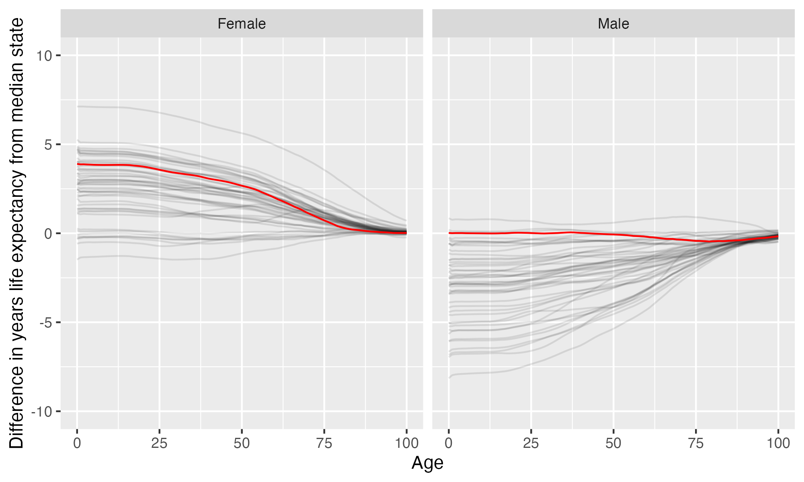

Southern Utah University
Southern Utah University is located in Cedar City, Utah. It is a public, 4-year or above institution.
From Wikipedia: Southern Utah University (SUU) is a public university in Cedar City, Utah. Founded in 1897 as a normal school, Southern Utah University now has over 1,800 graduates each year with baccalaureate and other graduate degrees from its six colleges. SUU offers more than 140 undergraduate and 19 graduate programs. More than 10,000 students attend SUU. Southern Utah University trademarked the name and is known as the University of the Parks. SUU’s 17 athletic teams compete in Division I of the NCAA and are collectively known as the Thunderbirds. SUU joined the Western Athletic Conference in July 2022.
Notes
These are items that bear looking into more closely.
- California considers the state this institution is in to have one or more anti-LGBTQ+ laws. It prohibits California-sponsored travel to this state as a safety measure. See more here.
Overview of institution
Institution kind: Master’s Colleges & Universities: Larger Programs
Undergrad program: Balanced arts & sciences/professions, some graduate coexistence
Graduate program: Postbaccalaureate: Education-dominant, with Arts & Sciences
Enrollment profile: Very high undergraduate (see more details below)
Average net price for undergrads on financial aid: $12,372 (This is 90% the average cost of Harvard).
Average net price for families with $30K-48K income: $8,796 (This is $7,400 more expensive than what Harvard costs for equivalent students).
Actual price for your family: Go here to see what your family may be asked to pay. It can be MUCH lower than the average price but also higher for some.
Size and setting: Four-year, medium, primarily nonresidential
In state percentage: 71.9% of first year students come from Utah
In US percentage: 96.3% of first year students come from the US
Graduation rate (within 6 years) for students seeking a Bachelors: 55.7% (this is what is usually reported as “graduation rate”)
Graduation rate (within 4 years) for students seeking a Bachelors: 29.4%
Student to tenure-stream faculty ratio: 32.4 (undergrads to tenure-stream faculty) [Tenure explained]
Student to faculty ratio: 22.6 (undergrads to all faculty)
Degrees offered: Certificate of less than 1 year, Certificate of at least 12 weeks but less than 1 year, Certificate of at least 1 year but less than 2 years, Associate’s degree, Bachelor’s degree, Master’s degree
Schedule: Semester
Institution provides on campus housing: Yes
Dorm capacity: There are enough dorm beds for 1004 students
Freshmen required to live on campus: No
Meal plan: Yes, number of meals in the maximum meal plan offered
Covid vaccination requirement for students: This institution was never reported as requiring covid vaccination for students (based on info from here)
Covid vaccination requirement for faculty/staff: This institution was never reported as requiring covid vaccination for faculty and/or staff (based on info from here)
Advanced placement (AP) credits used: Yes
Disabilities: 5 percent of undergrads are registered as having disabilities.
Overview of location
- Abortion in this state: Restrictive (based on https://states.guttmacher.org/policies/ as of May 10, 2023)
- Gun law stringency: F (higher grade = more stringent)
- State rep support for contraception: 0% of US reps from this state voted in favor of legal protections for contraception.
- State rep support for recognizing same-sex and interracial marriage: 100% of US reps from this state voted in favor of requiring states to recognize same-sex and interracial marriages performed in other states
- Anti-trans legislative risk: Worst (based on Erin Reed’s work, as of June 25, 2023)
- Ecological region: Great Basin shrub steppe
- Biome: Deserts & Xeric Shrublands
- Distance to mountains: 0.5 miles to North American Cordillera
- Climate: See overview at WeatherSpark
Similar institutions
This is using information about school size, acceptance rate, yield rate, graduation rate, cost, athletic conference, and similar metrics, but it can miss important axes of similarity (for example, culinary versus hair styling schools).
Map
Enrollment
| Southern Utah University | Change over ≤ 11 years | Trend | Big Sky Conference | Master’s Colleges & Universities: Larger Programs | |
|---|---|---|---|---|---|
| Undergrads (full time) | 8,281 (2021) |

|
↑ 243 per year |
||
| Undergrads (part time) | 3,799 (2021) |

|
↑ 193 per year |
||
| Grad students (full time) | 332 (2021) |

|
↑ 18 per year |
||
| Grad students (part time) | 1,199 (2021) |

|
↑ 47 per year |
||
| Admission rate (undergrads) | 89% (2021) |

|
|||
| Yield rate (percent of applicants offered undergraduate admission who accept) | 17% (2021) |

|
✪✪ Better (higher) than 22% |
✪✪ Better (higher) than 33% |
|
| Graduation rate (bachelors in 6 years) | 56% (2021) |

|
✪✪✪✪ Better (higher) than 64% |
✪✪✪ Better (higher) than 54% |
Student financing
At many universities, almost no students pay the listed tuition and fees (“sticker price”): instead, their financial aid package lowers this dramatically, but how much students pay can vary substantially based on family income and other factors. The tuition below is the average across many students receiving aid: your family may be asked to pay less or more than this.
| Southern Utah University | Change over ≤ 11 years | Big Sky Conference | Master’s Colleges & Universities: Larger Programs | |
|---|---|---|---|---|
| Average net price (for students awarded aid) | $12,372 (2020) |

|
✪✪✪✪✪ Better (lower) than 82% |
✪✪✪✪ Better (lower) than 79% |
| Undergrads getting federal aid | 88% (2021) |

|
✪✪✪✪ Better (higher) than 73% |
✪✪✪✪✪ Better (higher) than 92% |
| Undergrads getting any aid | 98% (2021) |

|
✪✪✪✪✪ Better (higher) than 82% |
✪✪✪✪ Better (higher) than 61% |
| Undergrads getting Pell grants | 29% (2021) |

|
✪✪ Better (higher) than 27% |
✪✪ Better (higher) than 20% |
Teaching
| Southern Utah University | Change over ≤ 11 years | Trend | Big Sky Conference | Master’s Colleges & Universities: Larger Programs | |
|---|---|---|---|---|---|
| Undergrads per tenure track instructor (lower is better) | 32 (2020) |

|
↑ 0.8 per year |
✪✪ Better (lower) than 22% |
✪ Better (lower) than 12% |
| Undergrads per instructor (lower is better) | 23 (2020) |

|
✪ Better (lower) than 11% |
✪ Better (lower) than 17% |
|
| Total instructors | 339 (2020) |

|
↑ 12 per year |
||
| Tenure track instructors | 236 (2020) |

|
↑ 4.1 per year |
||
| Non-tenure track instructors | 103 (2020) |

|
↑ 7.8 per year |
Student details
| Southern Utah University | Change over ≤ 11 years | |
|---|---|---|
| Dorm capacity | 1,004 (2021) |

|
| Percent of undergrads with registered disabilities (≤3 is rounded up to 3) | 5% (2021) |

|
Institution finances
| Southern Utah University | Change over ≤ 11 years | Trend | Big Sky Conference | Master’s Colleges & Universities: Larger Programs | |
|---|---|---|---|---|---|
| Revenue from tution and fees | 37% (2021) |

|
✪ Better (lower) than 9% |
✪✪✪ Better (lower) than 56% |
|
| Revenue minus expenses | $29 M (2021) |

|
✪✪✪ Better (higher) than 45% |
✪✪✪✪ Better (higher) than 73% |
|
| Revenue | $206 M (2021) |

|
↑ $7.3 M per year |
||
| Expenses | $178 M (2021) |

|
↑ $7.4 M per year |
||
| Assets | $314 M (2021) |

|
↑ $10 M per year |
✪ Better (higher) than 0% |
✪✪✪✪ Better (higher) than 60% |
Graduation rates
Graduation rates for bachelor’s degrees within 150% of normal time (6 years for a 4-year degree). Note that this uses US federal demographic data: it only has two genders and a specified set of ethnicities and races. For groups with small numbers, the graduation rate may be highly variable year to year (do all three people in this group graduate this year or just two of three, for example).
| Southern Utah University | Change over ≤ 11 years | Big Sky Conference | Master’s Colleges & Universities: Larger Programs | |
|---|---|---|---|---|
| Total | 56% (2021) |

|
✪✪✪✪ Better (higher) than 64% |
✪✪✪ Better (higher) than 54% |
| Men | 54% (2021) |

|
✪✪✪✪✪ Better (higher) than 82% |
✪✪✪✪ Better (higher) than 65% |
| Women | 56% (2021) |

|
✪✪✪ Better (higher) than 45% |
✪✪✪ Better (higher) than 47% |
| American Indian or Alaska Native men | 33% (2021) |

|
✪✪✪ Better (higher) than 60% |
✪✪✪ Better (higher) than 56% |
| American Indian or Alaska Native women | 25% (2021) |

|
✪✪ Better (higher) than 27% |
✪✪ Better (higher) than 37% |
| Asian men | 11% (2021) |

|
✪ Better (higher) than 0% |
✪ Better (higher) than 9% |
| Asian women | 67% (2021) |

|
✪✪✪ Better (higher) than 55% |
✪✪✪ Better (higher) than 54% |
| Black or African American men | 24% (2021) |

|
✪✪ Better (higher) than 36% |
✪✪ Better (higher) than 32% |
| Black or African American women | 53% (2021) |

|
✪✪✪✪✪ Better (higher) than 91% |
✪✪✪✪ Better (higher) than 69% |
| Hispanic men | 50% (2021) |

|
✪✪✪✪✪ Better (higher) than 82% |
✪✪✪✪ Better (higher) than 67% |
| Hispanic women | 50% (2021) |

|
✪✪ Better (higher) than 27% |
✪✪✪ Better (higher) than 52% |
| Native Hawaiian or other Pacific Islander men | 62% (2021) |

|
✪✪✪✪ Better (higher) than 80% |
✪✪✪✪ Better (higher) than 61% |
| Native Hawaiian or other Pacific Islander women | 50% (2021) |

|
✪✪✪✪✪ Better (higher) than 91% |
✪✪✪ Better (higher) than 60% |
| White men | 59% (2021) |

|
✪✪✪✪✪ Better (higher) than 91% |
✪✪✪✪ Better (higher) than 61% |
| White women | 60% (2021) |

|
✪✪✪ Better (higher) than 55% |
✪✪✪ Better (higher) than 42% |
| Two or more races men | 100% (2021) |

|
✪✪✪✪✪ Better (higher) than 100% |
✪✪✪✪✪ Better (higher) than 100% |
| Two or more races women | 100% (2021) |

|
✪✪✪✪✪ Better (higher) than 100% |
✪✪✪✪✪ Better (higher) than 100% |
| Nonresident alien men | 47% (2021) |

|
✪ Better (higher) than 18% |
✪✪✪ Better (higher) than 41% |
| Nonresident alien women | 36% (2021) |

|
✪ Better (higher) than 0% |
✪✪ Better (higher) than 21% |
Freshmen demographics
Demographic data for first time degree-seeking students. Note that this uses US federal demographic data: it only has two genders and a specified set of ethnicities and races.
| Southern Utah University | Change over ≤ 11 years | |
|---|---|---|
| Men (percent freshmen) | 34% (2021) |

|
| Women (percent freshmen) | 66% (2021) |

|
| American Indian or Alaska Native men (percent freshmen) | 0.6% (2021) |

|
| American Indian or Alaska Native women (percent freshmen) | 0.6% (2021) |

|
| Asian men (percent freshmen) | 0.2% (2021) |

|
| Asian women (percent freshmen) | 0.6% (2021) |

|
| Black or African American men (percent freshmen) | 0.2% (2021) |

|
| Black or African American women (percent freshmen) | 0.4% (2021) |

|
| Hispanic men (percent freshmen) | 1.8% (2021) |

|
| Hispanic women (percent freshmen) | 3.3% (2021) |

|
| Native Hawaiian or Other Pacific Islander men (percent freshmen) | 0.2% (2021) |

|
| Native Hawaiian or Other Pacific Islander women (percent freshmen) | 0.1% (2021) |

|
| White men (percent freshmen) | 21% (2021) |

|
| White women (percent freshmen) | 40% (2021) |

|
| Two or more races men (percent freshmen) | 0.9% (2021) |

|
| Two or more races women (percent freshmen) | 1.3% (2021) |

|
| Race ethnicity unknown men (percent freshmen) | 7.8% (2021) |

|
| Race ethnicity unknown women (percent freshmen) | 18% (2021) |

|
| Nonresident alien men (percent freshmen) | 1.3% (2021) |

|
| Nonresident alien women (percent freshmen) | 1.5% (2021) |

|
Freshmen geography
| Southern Utah University | Change over ≤ 11 years | |
|---|---|---|
| In state | 72% (2021) |

|
| US | 96% (2021) |

|
| Not reported | 0% (2021) |

|
Tenure track faculty
Tenure track faculty are those who are eligible for tenure. This includes both pre-tenure and tenured faculty. Once faculty get tenure, they are (generally) protected from being fired for intellectual reasons, helping to ensure their freedom in teaching and research. They can still lose their positions for misconduct, financial problems, not fulfilling their duties, or other reasons. Note that this chart uses US federal demographic data: it only has two genders and a specified set of ethnicities and races.
| Southern Utah University | Change over ≤ 11 years | Trend | |
|---|---|---|---|
| Total (tenure-track count) | 236 (2020) |

|
↑ 4.1 per year |
| Women (tenure-track count) | 68 (2020) |

|
|
| Men (tenure-track count) | 168 (2020) |

|
↑ 3.4 per year |
| American Indian or Alaska Native (tenure-track count) | 0 (2020) |

|
↓ -0.1 per year |
| Asian (tenure-track count) | 8 (2020) |

|
|
| Black or African American (tenure-track count) | 1 (2020) |

|
|
| Hispanic or Latino (tenure-track count) | 4 (2020) |

|
↑ 0.4 per year |
| Native Hawaiian or other Pacific Islander (tenure-track count) | 2 (2020) |

|
|
| White (tenure-track count) | 205 (2020) |

|
|
| Two or more races (tenure-track count) | 3 (2020) |

|
|
| Nonresident alien (tenure-track count) | 8 (2020) |

|
Non-tenure track faculty
Non-tenure track faculty are not eligible for tenure. Some are hired one semester at a time, some have multi-year contracts. They typically have a higher teaching load than tenure track faculty, leaving less time for research or other creative endeavors. They are also easier to fire than tenured faculty. Sometimes they are external experts (a noted musician, a former senator) who are hired to teach some classes without the expected permanence of a tenure-track position. Note that this chart uses US federal demographic data: it only has two genders and a specified set of ethnicities and races.
| Southern Utah University | Change over ≤ 11 years | Trend | |
|---|---|---|---|
| Total (non-tenure-track count) | 103 (2020) |

|
↑ 7.8 per year |
| Women (non-tenure-track count) | 52 (2020) |

|
↑ 3.4 per year |
| Men (non-tenure-track count) | 51 (2020) |

|
|
| American Indian or Alaska Native (non-tenure-track count) | 0 (2020) |

|
|
| Asian (non-tenure-track count) | 0 (2020) |

|
|
| Black or African American (non-tenure-track count) | 1 (2020) |

|
|
| Hispanic or Latino (non-tenure-track count) | 0 (2020) |

|
|
| Native Hawaiian or other Pacific Islander (non-tenure-track count) | 0 (2020) |

|
|
| White (non-tenure-track count) | 96 (2020) |

|
↑ 6.2 per year |
| Two or more races (non-tenure-track count) | 0 (2020) |

|
|
| Nonresident alien (non-tenure-track count) | 2 (2020) |

|
Library facilities
| Southern Utah University | Change over ≤ 11 years | Trend | Big Sky Conference | Master’s Colleges & Universities: Larger Programs | |
|---|---|---|---|---|---|
| Number of physical books | 210,475 (2021) |

|
✪ Better (higher) than 0% |
✪✪✪✪ Better (higher) than 62% |
|
| Physical library circulations per students and faculty | 4.5 (2020) |

|
↓ -0.9 per year |
✪✪✪✪✪ Better (higher) than 89% |
✪✪✪✪✪ Better (higher) than 94% |
| Digital library circulations per students and faculty | 31 (2020) |

|
↑ 5.1 per year |
✪✪✪✪ Better (higher) than 78% |
✪✪✪✪ Better (higher) than 67% |
Life expectancy
This hopefully will not be relevant for potential students, but it may be for people moving to an area longer term, such as faculty and staff choosing where to live. This uses information from US National Vital Statistics Reports for 2020; like much federal data, it assumes people are male or female. For age difference from median, it is from the median state, averaging across all genders (one consequence of this is that the difference from the median life expectancy is almost always negative for men).
- Life expectancy at birth: 80.6 years women (3.9 years over the median), 76.7 years men (0 years over the median)
- Remaining life expectancy at age 18: 63.2 years women (3.8 years over the median), 59.4 years men (0 years over the median)
- Remaining life expectancy at age 30: 51.6 years women (3.4 years over the median), 48.2 years men (0 years below the median)
- Remaining life expectancy at age 45: 37.4 years women (2.9 years over the median), 34.5 years men (0 years below the median)
- Remaining life expectancy at age 60: 23.9 years women (2 years over the median), 21.8 years men (0.2 years below the median)
We can also plot the extra / fewer years of life expected for this state (red) compared to other states (dark gray) at each age. Again, this is normalized for the median state.

SAT scores
| Southern Utah University | Change over ≤ 11 years | Trend | |
|---|---|---|---|
| Applicants submitting SAT | 4% (2021) |

|
|
| SAT Evidence Based Reading and Writing 25th percentile score | 520 (2021) |

|
|
| SAT Evidence Based Reading and Writing 75th percentile score | 640 (2021) |

|
|
| SAT Math 25th percentile score | 510 (2021) |

|
↑ 11 per year |
| SAT Math 75th percentile score | 600 (2021) |

|
↑ 5.8 per year |
ACT scores
| Southern Utah University | Change over ≤ 11 years | |
|---|---|---|
| Applicants submitting ACT | 81% (2021) |

|
| ACT Composite 25th percentile score | 20 (2021) |

|
| ACT Composite 75th percentile score | 26 (2021) |

|
| ACT English 25th percentile score | 19 (2021) |

|
| ACT English 75th percentile score | 26 (2021) |

|
| ACT Math 25th percentile score | 18 (2021) |

|
| ACT Math 75th percentile score | 26 (2021) |

|